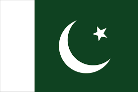

Home Page
Introduction
Pakistan got its independence on 14th August 1947. The country’s main purpose was to live life freely as Muslims. Pakistan is located in the south of Asia. It is in the south of the Arabian Sea. It has 4 neighboring countries. Pakistan is in 33rd rank among other countries based on area.It is also known to be the third largest country in Asia based on land area. Pakistan’s border in the east is with India, which has a border of 3,323 kilometers; Pakistan’s border with Afghanistan is in the northwest it has a border of 2,640 kilometers; Pakistan’s border with Iran is in the west it has a border of 909 kilometers whereas Pakistan border with China is 523 kilometers long and is located in the northeast.

Pakistan Army is ranked as the 6th strongest army among the 145 countries. Pakistan has the world’s second-highest mountain K2, with the third highest, Tirch Mir, and the three highest mountain ranges, i.e., Hindukush, Karakoram & Himalayas. Pakistan also has the world’s deepest sea port in Gwadar. Pakistan’s Edhi Foundation is the world’s largest ambulance service provider. Sialkot (a city in Pakistan) produces half of the world’s balls, which resulted in Pakistan becoming the world’s largest hand-sewed football; these footballs are also used in FIFA World Cups. Tarbela Dam is the world’s largest earth-filled dam. Pakistan is the only Muslim country that has nuclear power. The world’s fourth-largest irrigation system is also in Pakistan. Out of 100% population, 96.2 percent of Muslims in Pakistan, 1.6% Hindus, Christians 1.59%, etc. Cholistan, Thar, and Thal are some of the famous desserts in Pakistan.
Muslims of the subcontinent were not given the proper rights and were harassed for living according to the Islamic way. Pakistan was a dream for Allama Muhammad Iqbal that came true after many sacrifices and struggles of many Muslims.
There are four provinces of Pakistan.Those names are given.we can discuss details about the the provinces in next pages
national symbols of Pakistan are:
There are four provinces of Pakistan.Those names are given.we can discuss details about the the provinces in next pages
I would say that Pakistan has faced several challenges since its independence. But on the other hand, Pakistan is rich in culture and has a young population. This population can help Pakistan to become more economically stable and help Pakistan to prosper. This country had been faced several challenges, such as poverty, terrorism, and political instability, and done major improvements in many scenarios. Pakistan’s strength is its location and size; this country also benefits from foreign aid and receives donations from IMF, World Bank, and the USA, which means that Pakistan has some good international relations. The major weakness of Pakistan is that people lack knowledge in different fields to become a more modernized society. Pakistan also lacks an efficient education system. There is improper governance, a lack of an efficient education system, and health care problems that can lead to future difficulties for Pakistan. As Pakistan has faced many challenges in history, it can also face any other challenge with faith and strength.